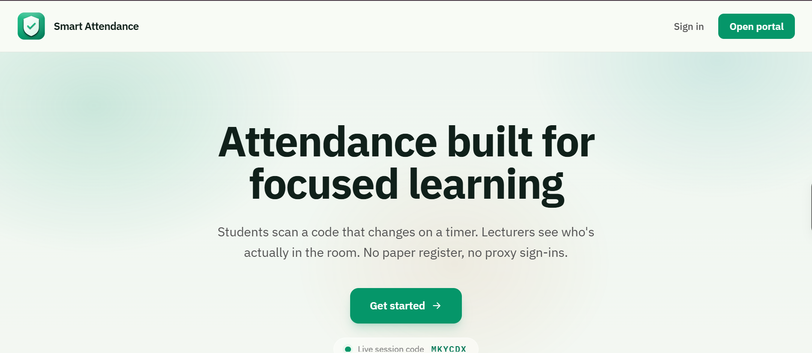

01. PRODUCTION SYSTEM
Smart Attendance Management System
Full-stack attendance management platform deployed in active university departmental use.
> The Problem
Academic departments struggled with paper register proxy signing, lost attendance sheets, and tedious end-of-semester manual calculations to determine exam eligibility for hundreds of students.
> What I Built
- Architected a normalized MySQL (3NF) schema managing departments, courses, student enrollments, and timestamped attendance sessions.
- Implemented role-based authentication separating Lecturer, Department Admin, and Student portals with strict session validation.
- Engineered an automated attendance percentage computation engine with dynamic eligibility thresholds for exam clearance.
- Built instant report generation exporting course-level attendance statistics to PDF and CSV formats for departmental audits.
> Stack

Click to expand